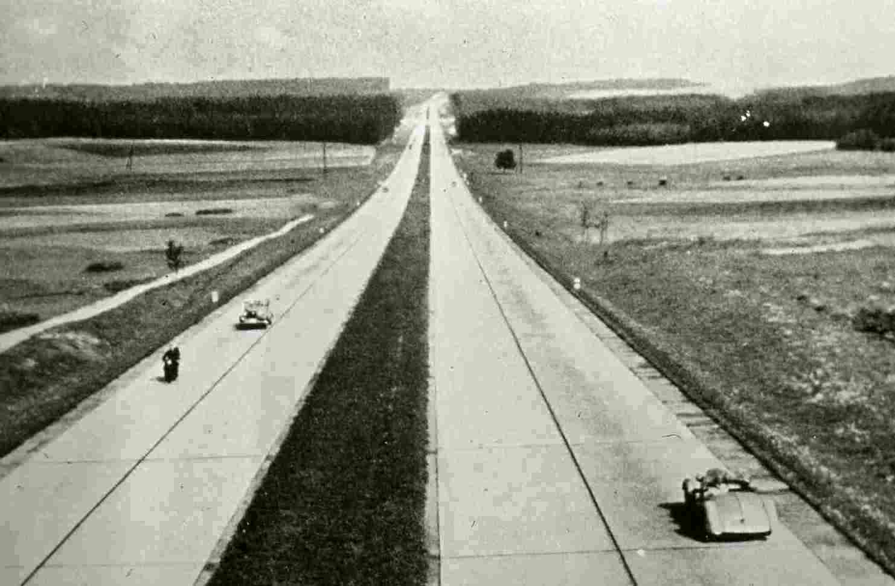
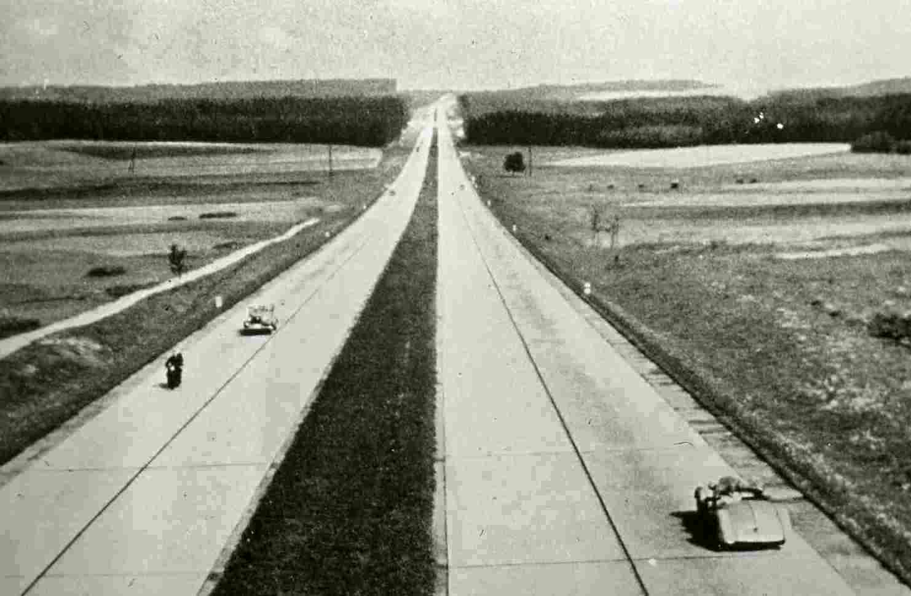

OASE 96 examines the remarkable revival of architectural practices that focus on reuse and appropriation of buildings, environments and materials. To what extent can and will designers engage in this process, and what is the possible positive or negative social impact of these interventions? This issue focuses on case studies, practical experience, critical reflection and ideas that show how architects and urban planners proactively deploy reuse in view of future user opportunities and/or applications.
Between the faith in the autonomy of architecture on the one hand and design that centres on the user on the other lies a whole range of practices that address the traditional separation between design and use in a radical way. In this issue, the contrast between design and use is not perceived as an issue that needs to be resolved, but as a productive area of tension within which architecture is created.
 
